京津冀一体化的概念已经“横空出世”很多年了，实锤动作也在不断抛出。
但有没有一个明显的感觉？今年，在京津冀的“紧密度”上有些大踏步的前进。
最核心的原因是，北京的各方面的指标已越来越接近红线了，疏解的急迫感越来越严重了。
在京津冀城市群中，北京越紧迫，天津就越有机会。
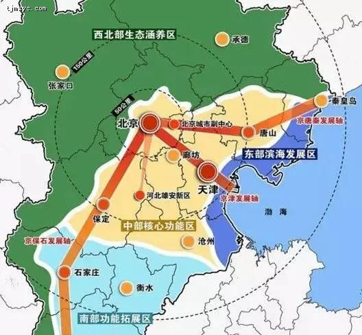
暂且不说各地区的“小动作”，这几个官方实锤的“大动作”，已经打开了京津冀接下来发展的“大风口”。
● 2月21日，国家发改委发布了《关于培育发展现代化都市圈的指导意见》：
天津，作为缓解北京人口重压的重要分支，是京津冀都市圈的重要支点，也就是天津和北京之间要继续“涂抹强力胶”。
● 3月15日，北京住房公积金管理中心公布，北京购房者公积金异地提取的范围放宽至天津、河北两地。
● 4月18日，北京市、天津市、河北省联合开展引进高层次人才系列活动，面向海内外发布京津冀2019年高层次和紧缺人才引进计划。
● 4月29日，“通武廊”建设发布中标公告。
● 5月7日,《市发展改革委等九部门关于印发天津市2019年重点建设、重点前期和重点储备项目安排意见的通知》中明确指出：
将开工建设中心城区至武清市域郊铁路，天津至廊坊全长65公里，设站10座，其中天津境内50公里，设站8座。
近期推动地铁5号线至武清城区段，长度 25 公里，设站5座。
通武廊的建设已带上了日期——2020-2023年，板上钉钉！
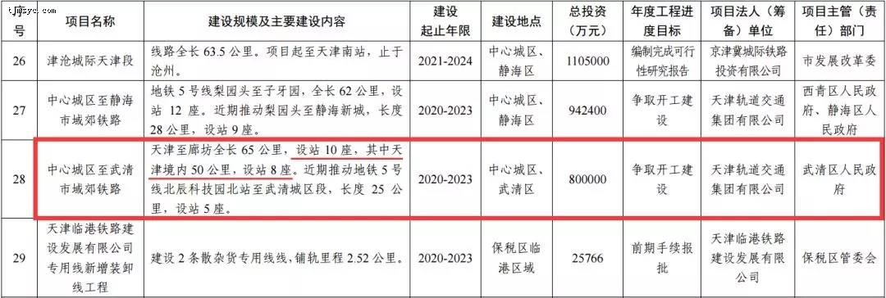
● 2019年一季度，北京企业在津投资项目到位资金362.43亿元，占比达48%，同比增长44.56%，引进北京大项目数量、服务业比重和国企增速均创历年新高。
可以很明确的看出，未来几年北京最大的机会并不在北京，而在京津冀。
而天津作为京津冀城市群中第二大主力城市，今后的发展机遇，已经显而易见了。
天津的中心主城中，北辰区作为北大门，在这场“红利战争”里，自然是C位出道，毕竟京津冀的“能量槽”中，“站位”是很重要的。
如果用未来“超级城市”的格局来看，那北辰区，简直是“很中心”了。
但如果说，在北辰区“收红包”最多的，那双街板块现在可是“带流量小能手”。
就拿最近热的冒泡的通武廊来说，大致路线早就披露过：
“将利用天津地铁5号线，从北辰区双街终点站延伸到武清区。到达武清区后改为地上轻轨线路，一直延伸到河北省廊坊，和北三县轻轨连接，最后直达北京城市副中心──通州区。”
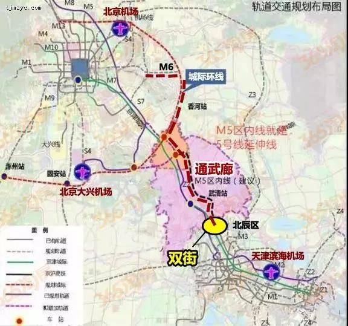
双街板块一直比较低调，也因为低调，许多人都忽略了这个正在蓬勃生长的城区。
整体板块分为两大片区，京津公路以西是较成熟的居住区，规划人口约13.7万人。京津公路以东是以科技金融创新、电商物流为主的产业园区。
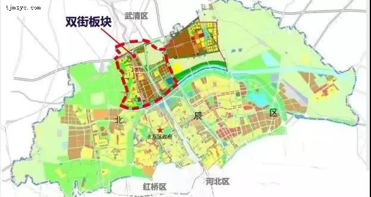
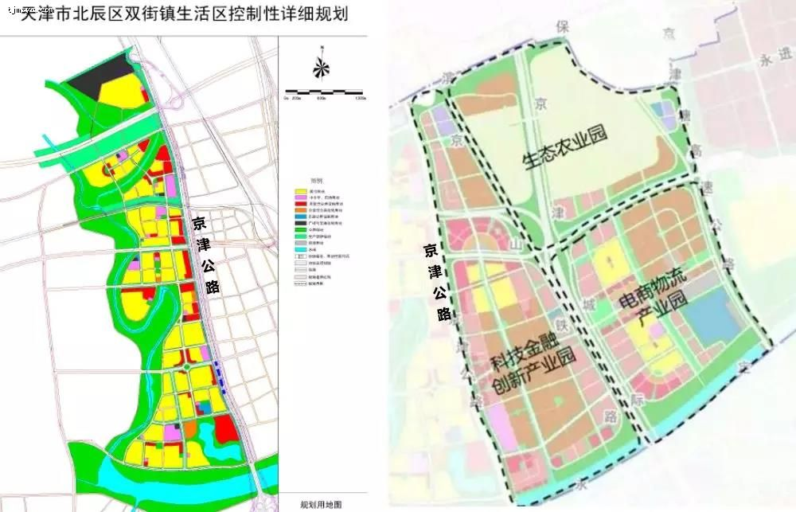
板块内住宅目前有半湾半岛、柴楼新庄园、国耀上河城等。
这几年，双街板块堪称“佛系”，很少“大声疾呼”，但仍掩盖不住它的成绩。
5年来双街板块的房价涨幅甚至都超过了“流量小花”南站和华明镇。
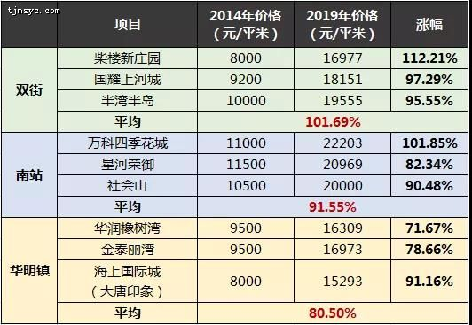
但是新房市场却进入了长达2年的“断粮期”，这就给双街板块筑好了需求量的底。所以核心区的几个二手房单价早已站上了1.7-2万/平米的台阶。
不过没有新盘，也不妨碍板块的默默变化，天津整体的大发展，并没有把双街落下。
• 双街板块所在的“天津市北辰产城融合示范区”，已经获得了国家发改委审批，成为天津市唯一的国家级产城融合示范区；
• 区域内的大型综合体上河城购物中心也即将开业；
• 双街幼儿园、北辰模范小学、华辰中学等教育资源也在不断完善；
• 地铁4号线北段双街板块内将设6个站点，预计今年启动征收工作……
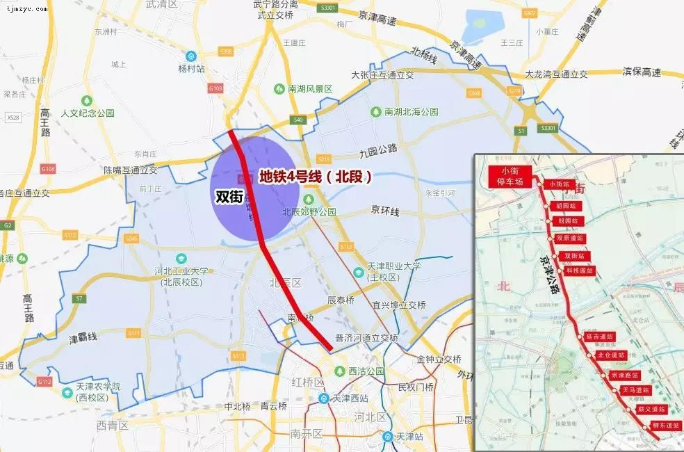
再叠加通武廊天津的起始点，双街板块看起来似乎身处一种时常被“彩蛋”砸中的氛围中。
一不小心，双街就不止是双街人的双街了。
“红利雨”一直下，现在的双街，是完全不缺购房需求的，只是缺房子，更缺产品力足够强的好房子。
2019年1月，融创在双街板块生活区摘得两宗宅地，其中一块地自持规划商业建筑面积1.3万平米。
这一场土拍，双街等了大概6年。
生活区内上一次有土地出让，还是2013年融创拿下的一宗地块，即为现在的半湾半岛。
无论如何今年的这场土拍，简直像离家出走N年的太阳，终于结束流浪回到了家一样。
双街的佛系气质马上就成了随风往事，“强势灵魂”瞬间切换上线。
如今这两宗地块——融创运河宸院，已经成为双街板块的强力补给。
双街板块2年来没有新盘上线的副作用是，导致板块都没能跟上这一轮产品迭代的潮流。
融创在华北区域布局的城市很多，比如天津、西安、郑州、沈阳、哈尔滨、大连等，而天津是融创的“大本营”，所以融创更懂天津。
融创运河宸院是融创“宸院系”首映天津。
与郑州大河宸院、御湖宸院、中原宸院相似，同样拥有新中式的产品设计、高颜值的建筑风格……
果然，在融创运河宸院看到了清隽挺拔的立面、宽景大窗、简单的线条，一看就很融创。
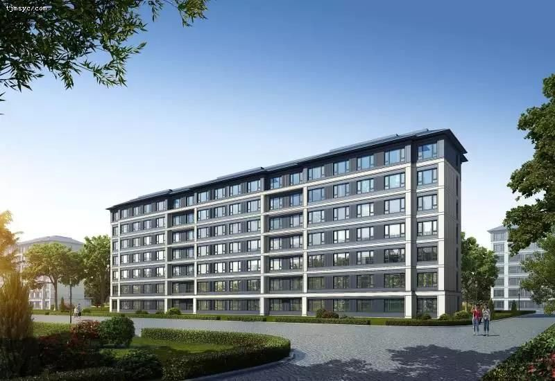
融创运河宸院效果图
楼盘体量不小，分两块地开发，打造以小高层、洋房为主的低密社区。
同时还规划有幼儿园、养老中心、商业配套等，以融创的脾气，势必都会是“头部资源”。
整体社区规划不复杂，有自己的美，说一些不易察觉的细节：
• 社区配有三重大堂：社区大堂，入户大堂，地库大堂。衡量一个项目是否具有改善基因，“地库大堂”这个指标屡试不爽。
• 小区围墙有周界入侵报警系统；小区围墙、地下车库、园区出入口、单元出入口、电梯内、地上公共活动区有视频监控系统，园区重要和偏僻位置有巡更系统；尽最大可能保证业主的安全。
• 楼座的首层、二层、顶层、次顶层都设置有红外幕墙的探测器。
• 社区树种，采用全冠移植，其中不乏名贵树种，保证社区能三季有花，四季有绿。并且融创物业对绿化的维护是相当到位的，能够让小区绿化几年如一日。
……
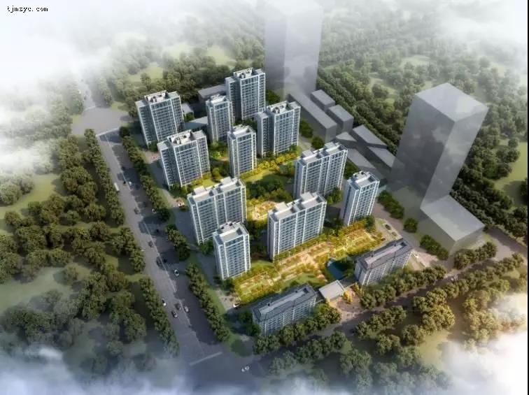
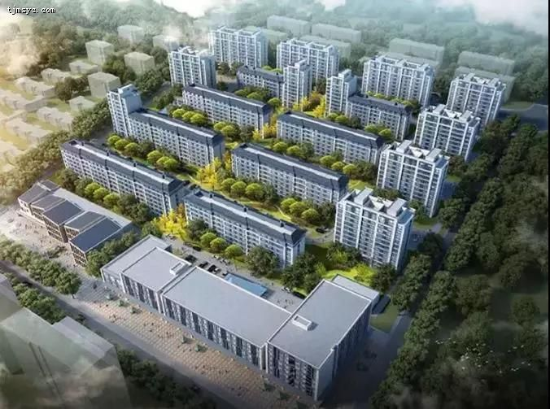
融创运河宸院效果图
融创运河宸院主推建面约99、108、127平米户型，均为三室。
如今的两室户型基本已经“退居二线”了，即使90多平米，也应是三室的标配，随之而来的是户型设计变得紧凑而精致。
这才是保证既能控制住总价，又能实现改善需求的前提。
如果用“超级城市”的思维来看待，接下去在天津买房，不得不讲究的，是与地铁站点的距离。
融创运河宸院距离地铁4号线仅几百米的距离，因为通武廊的建设已经明确了要以双街车辆段作为起点，所以未来天津地铁4号线、5号线以及通武廊之间的关系会更加紧密。
也就是说，融创运河宸院所在位置“北上”或是“南下”都有了轨道交通的加持。
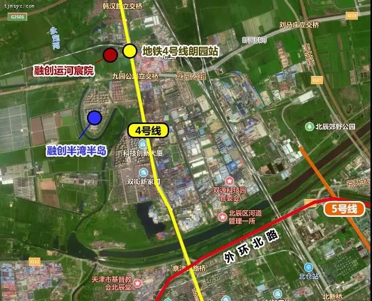
离地铁很近，有不错的教育资源，又是融创的品牌，光是房子就够有吸引力，还逢上了板块动能的大发展。
所以，冲着这些资源配置，其实不少人都盯上了融创这批房子，有被“虹吸”到这儿来的“北漂”，也有板块核心区想要改善的业主。
融创运河宸院目前小高层均价15000元/平米起，洋房均价16000元/平米起。
事实上，把天津的环城四区遍寻一圈，这样的均价线，并不算太多。
更不用说，它还有地铁与低密区这两项加分指标。
随着轨道交通的建设，双街板块对于由城市资源不断倾斜而带来的强烈“推背感”，将更能感同身受。
政府的大基建相当于给板块开了个“大奖”，城市配套、文化地标、居住产品都要迎来全新升级。
既然已经看清发展的骨骼，那么提前占位就显得尤为重要了。
融创在这方面很“领先”。
2014年进场的半湾半岛，撬动的是双街板块最初的发展脉络；2019年的融创运河宸院，将会撬动双街板块在京津冀大发展中的下半场。
其实以TOP4的排名来说，融创目前进入的城市并不是最多的，甚至说是前五强里开拓城市相对较少的。
但是融创的神奇之处在于，但凡进入的城市都能获得极高的市场占有量，城市成交规模排名都很靠前。
因为，在很多地方，融创本身就是一种标签。
免责声明：本文对项目所做介绍旨在传递相关信息，不意味着对此做出承诺和保证，亦不构成代表项目权利方作出的承诺与保证。项目信息具有时效性，随时会发生变化，敬请周知。具体项目信息请以项目权利方正式公布为准，敬请通过正规渠道审慎了解最新信息并认真核实相关信息。版权人及本网站有权对本文内容随时进行更改，事前和事后将不会另行通知，敬请密切关注本网站。
来源：天津365淘房

扫码微信免费咨询天津落户
微信号：nan395013050